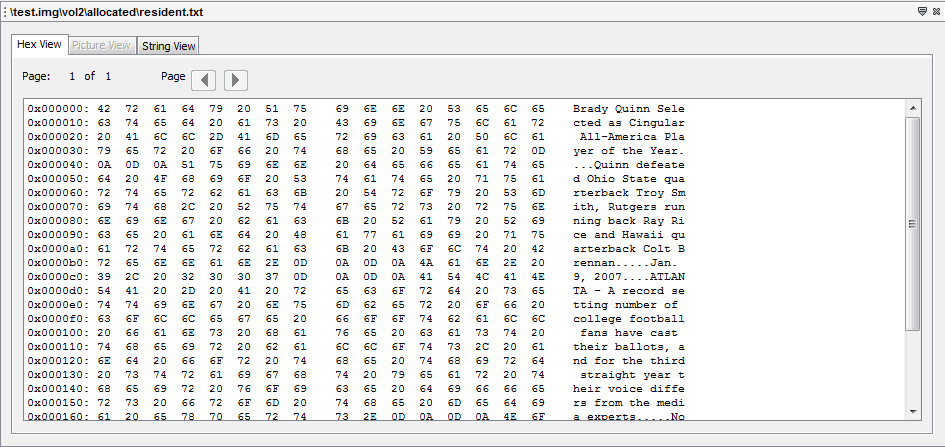

Hex Content Viewer shows you the raw and exact contents of a file. In this Hex Content Viewer, the data of the file is represented as hexadecimal values grouped in 2 groups of 8 bytes, followed by one group of 16 ASCII characters which are derived from each pair of hex values (each byte). Non-printable ASCII characters and characters that would take more than one character space are typically represented by a dot (".") in the following ASCII field.
Below is an example of "Hex Content Viewer" window:
